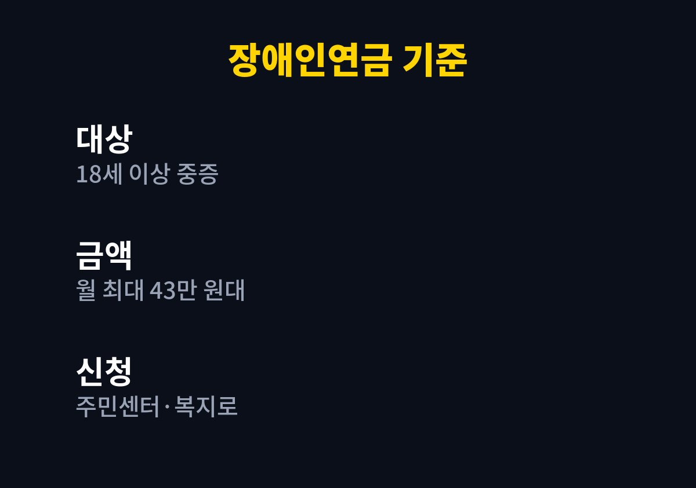
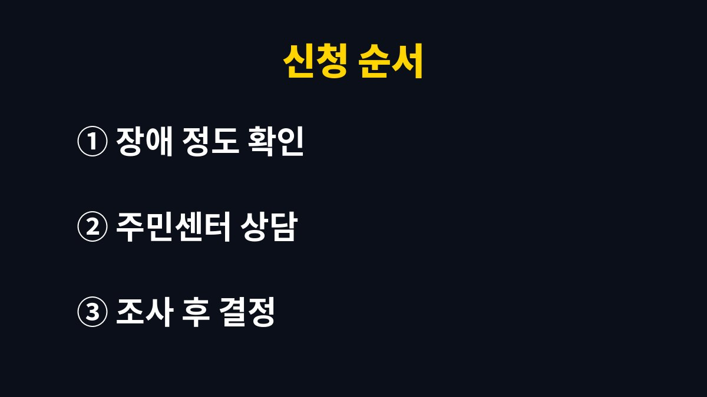

장애인연금은 2026년 기준 월 최대 43만 9,700원까지 받을 수 있는 제도이고, 장애인이면 모두 받는 돈은 아니다.
장애 정도와 소득·재산 수준을 함께 보기 때문에 대상 여부를 먼저 따져 봐야 한다.
비슷한 이름의 제도와 섞어 생각하다 신청을 놓치는 경우가 많아 오해부터 짚는다.
장애인연금은 장애 정도가 심한 중증장애인이 대상이다.
여기에 소득과 재산을 합쳐 계산한 소득인정액이 정해진 기준 이하여야 한다.
기준 금액은 해마다 바뀌므로 공식 공고의 최신 숫자를 확인해야 한다.
이름이 비슷해도 두 제도는 재원과 지급 이유가 다르다.
국민연금 장애연금은 가입 이력을 바탕으로 하고, 장애인연금은 소득 지원 성격의 복지 급여다.
이미 한쪽을 받고 있어도 다른 쪽 요건은 따로 본다.
지급액은 기초급여와 부가급여로 나뉘고, 가구 상황에 따라 달라진다.
월 최대 43만 9,700원은 가장 높은 구간의 금액이다.
그래서 내가 받는 돈이 이 숫자와 같다고 보면 안 된다.
세 가지 오해는 모두 이름이 비슷하거나 금액만 보고 판단해서 생긴다.
신청 전에 내 상황이 어디에 해당하는지 적어 두면 상담 시간이 줄어든다.
아래 표는 신청 전에 확인할 항목을 모은 것이다.
정확한 선정기준액과 소득인정액 계산은 공식 공고에서 보아야 한다.
표에 없는 세부 기준은 신청 상담에서 다시 확인한다.
이 표의 지급 구성에서 기초급여는 소득 보전의 성격이고 부가급여는 장애로 생기는 추가 비용을 덜어 주는 성격이다.
가구가 어떤 구간에 들어가는지에 따라 두 급여의 합계가 달라진다.
그래서 인터넷에서 본 금액을 내 통장에 들어올 금액으로 그대로 옮겨 적으면 어긋난다.
| 확인 항목 | 기준 | 확인할 곳 |
|---|---|---|
| 대상 연령 | 18세 이상 중증장애인 | 복지로·보건복지부 |
| 소득 기준 | 소득인정액이 선정기준액 이하 | 보건복지부 고시 |
| 지급 구성 | 기초급여 + 부가급여 | 주민센터 상담 |
| 지급일 | 매월 20일 안팎 | 지급 안내문 |

신청은 주소지 주민센터를 찾는 방법이 가장 확실하다.
복지로 온라인 신청도 열려 있으며, 소득과 재산 조사가 뒤따른다.
주민센터에 가면 상담 직원이 장애 정도와 가구 구성을 물어본다.
이때 함께 사는 가족의 소득과 보유한 재산 목록을 대략 알고 가면 상담이 짧아진다.
온라인으로 시작하더라도 조사 과정에서 추가 서류를 요청받는 일이 있다.

재산이 많지 않아도 금융재산이나 보증금이 소득인정액에 들어가면 기준을 넘을 수 있다.
반대로 소득이 있어도 공제가 적용돼 대상에 들어가는 경우가 있어 직접 판단하기 어렵다.
결과가 기대와 다르면 이의신청 절차가 있는지 주민센터에 묻는다.
연령이 바뀌는 시점에도 주의한다.
만 65세가 되면 기초연금 쪽으로 넘어가는 규정이 있어 장애인연금 수급이 이어지는지 따로 확인해야 한다.
해당 연령에 가까운 가족이 있다면 미리 주민센터에 전환 방식을 묻는다.
신청 후 결과가 나오기까지 몇 주가 걸리기도 하므로 지급 시작 시점은 안내문으로 확인한다.
지급이 확정되면 이후 주소나 계좌가 바뀔 때마다 변경 신고를 해야 한다.
신고를 빠뜨리면 지급이 지연되는 일이 생긴다.
지금 할 일은 가까운 주민센터에 연락해 내 장애 정도가 대상인지 먼저 묻는 것이다.
대상이 맞으면 서류를 준비해 신청하고, 아니면 장애수당처럼 다른 제도가 있는지 함께 문의한다.
서류가 막막하면 주민센터 복지 담당 직원에게 필요한 목록을 처음에 한 번에 받아 두면 헛걸음을 줄일 수 있다.
참고 자료: 보건복지부 「장애인연금 개요」(2026년 11월 확인)
※ 2026년 11월 기준 공개된 정보를 정리한 글이며, 정확한 대상 요건·금액·신청 기간은 복지로·정부24·관할 주민센터의 공식 공고를 확인하길 바란다.